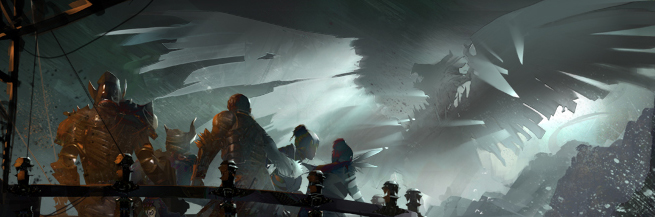

About
The Stormcallers' Charter

"The universe speaks in many languages, but only one voice.
The language is not norn or human or asuran or charr or sylvari. It speaks in the language of hope.
It speaks in the language of trust. It speaks in the language of strength and the language of compassion. It is the language of the heart and the language of the soul.
But always it is the same voice. It is the voice of our ancestors speaking through us and the voice of our inheritors waiting to be born. The small, still voice that says: 'We are one. No matter the blood, no matter the skin, no matter the world, no matter the history. .. We are one. No matter the pain, no matter the darkness, no matter the loss, no matter the fear. .. We are one.'
Here, gathered together in common cause, we begin to realize this singular truth and this singular rule that we must be kind to one another. Because each voice enriches us and ennobles us and each voice lost diminishes us.
We are the voice of the universe, the soul of creation, the fire that will light our way to a better future. We are one."
Rules
What? Just use common sense will you.
Oh yeah, respect Val or you'll see what happens.